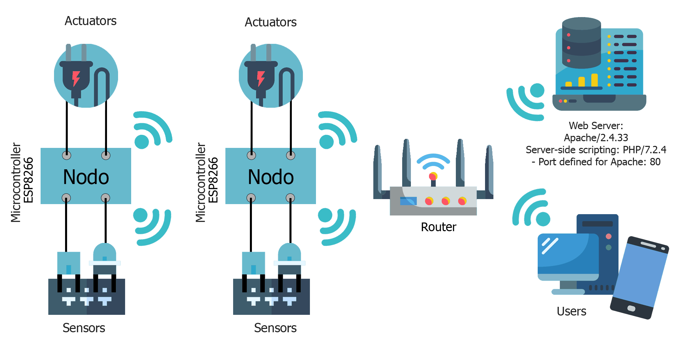
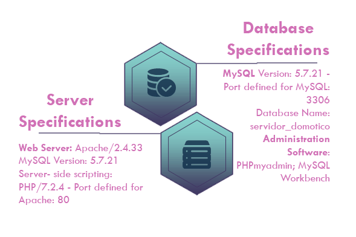
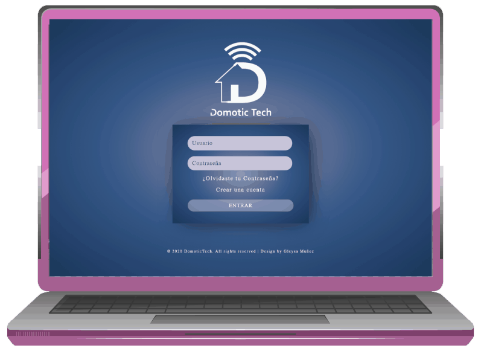

DOMOTIC TECH
For: University of Los Andes
By Gleysa Muñoz
Resume
This project is focused on the design and implementation of a home automation control system based on open source software that provides the integration of different systems and technologies of automation devices in the environment through the simultaneous use of electricity, electronics, computing and telecommunications, thus guaranteeing a level of automation that allows the user to control or monitor their environment easily and safely. The home automation control system to be implemented uses a software / hardware platform based on PHP, MySQL, JavaScript, HTML5, CSS3 and a language based on C ++; as well as the use of sensors, actuators and microprocessors, in which the data acquisition module operates wirelessly, so the system remotely monitors various variables of interest through WIFI technology. For this type of communication, the TCP / IP protocol was used, a graphical interface that acts as a client and the microprocessors, which act as a client / server. Finally, the processing, control, storage and presentation of the information of the analog and digital variables is presented in a simple, intuitive and natural way with visual elements such as charts and graphs through the user interface created.


Domotic Tech
It's a home automation control system that incorporates automation mechanisms and devices capable of communicating with each other and with users through an interface that coordinates and controls all electronic devices. This system is based on an open source platform whose hardware implementation is accessible and low-cost, offering solutions in automation, comfort, reduction of domestic work, increased security, as well as the rationalization of different consumptions and the optimization of the resources.

Interface
Domotic Tech offers a friendly and intuitive user interface, allowing the user to enjoy flexible interaction and make use of the interface without having engineering knowledge. This platform guarantees the integration of different elements that make up a home automation system and that use different communication protocols, thus establishing the necessary communication mechanisms between the home automation central, sensors and actuators. System data acquisition is operated wirelessly through the TCP/IP communication protocol.

Control
To activate an on/off device, such as a relay, a led or a buzzer, the user must press the button corresponding to said device and when doing so, the associated hardware device will be activated simultaneously by WIFI. In the case of devices such as servo motors or the stepper motor, the actuator must receive information about how many degrees it must rotate.


Items or devices
By clicking on the "items or devices" option in the main menu, the user will access the section in charge of customizing the automation devices that will be used in the different user projects. The platform brings a total of 14 default devices and you have the option of making use of these default items for any of your projects.

The user can also create and customize devices. Device customization consists of creating a device, either input or output, giving it a name and a description according to user preferences, linking it to a sensor or actuator, as well as assigning an image or icon to represent it.

Data Base
The user will be able to consult the database corresponding to each of their projects, being able to access the data provided by each of the sensors configured in the project.

When the user selects one of the sensors associated with the project, they will be able to view and monitor the data provided by it.

Some features
The user can view the data delivered by the sensors not only through charts, but also through gauges.

The user will be able to establish the configuration of the microcontrollers in the system, thus providing the connection information to the home automation network to the microcontrollers.

Connections
In the following diagram, it can be seen that both the server, the clients and different nodes (ESP8266 microcontrollers) communicate wirelessly through a WIFI network through the router of the network assigned for the home automation system, which is responsible for interconnecting these devices.
Software features
Here are some software features that are part of the requirements of the home automation environment. These features include the web server and database specifications.
